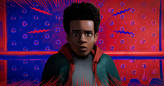
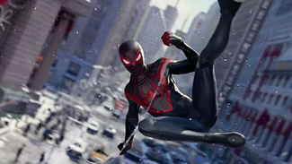
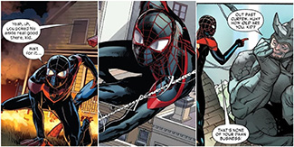
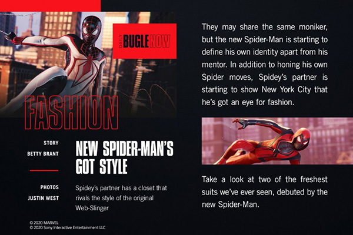

Welcome to Brooklyn, home of the new Spider-Man!
This site is a page to keep track of our new favorite hero in the media. Keep an eye out for our two friendly neighborhood Spider-Men!
-  Check out Mile's debut to the world of Spider-People! "Into the Spiderverse," is show the origin story of Miles Morales,
just a normal kid from Brooklyn that is thrown into the world of crime fightng. Thankfully Spider-People from different multi-verses join Miles to defeat King Pin!
-  After the success of Spider-Man PS4, Miles was welcomed to the playstation family in his first game, "Marvel's Spider-Man:Miles Morales."
This game starts after Miles has already received mentorship from Peter Parker. When Peter goes on vacation, Miles in the only Spider-Man to protect the city from Roxxon and the Underground.
-  With all the excitement for Miles, a comicbook revival was made! The comic was recently rebooted by Marvel to introduce new generations to Miles Morales.
This revival happened alongside DC's Static Shock comicbook revival, another young Black superhero.

If you're looking for traditional media, pick up your copy of the Daily Bugle. It's rare to find J. Jonah Jameson say something nice about the Spider-Men but at least the pictures are cool!
Thanks for visiting!
Return to Index Page